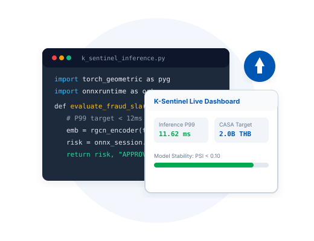

Engineering Case Studies
From sub-12ms graph fraud scoring engines and Basel-compliant credit risk models to hybrid Lambda streaming architectures and geriatric clinical analytics.

K-Sentinel & WealthPilot • Two-Tier Financial Intelligence
Architectural Challenge: 3.2M young K PLUS mobile banking users require autonomous micro-sweeping into savings vaults while shielding accounts against fraud and mule syndicates. Monolithic graph neural networks exceed mobile transaction latency budgets (>80ms).
Two-Tier Solution: Architected a decoupled inference pipeline. Offline PyTorch Geometric Relational GCN generates 16-dimensional node embeddings capturing multi-hop transaction topologies. An online ONNX Runtime v1.30 serving engine delivers sub-12ms scoring at point of payment.
Regulatory Recourse: Integrated TreeSHAP Shapley decompositions and DiCE counterfactual recourse to explain risk flags to customers, paired with dynamic 6% cashflow micro-sweeping into high-yield vaults.
Enterprise Credit Risk Scoring & Explainable AI Engine
Regulatory Mandate: Commercial credit underwriting models must fulfill Basel II/III internal rating requirements and the Equal Credit Opportunity Act (ECOA/FCRA), demanding strict monotonic behavior, population stability (PSI), and legally defensible adverse action notices.
Dual-Scorecard Pipeline: Screened high-dimensional financial features using monotonic Weight of Evidence (WoE) and Information Value (IV) optimization via OptBinning. Trained a calibrated LightGBM model producing exact instance-level TreeSHAP Shapley decompositions.
Counterfactual Recourse: Engineered an algorithmic DiCE recourse module that provides declined applicants with mathematically valid, minimal actionable steps (e.g. reduce revolving utilization below 28%) to transition into credit approval.
Long Overdue Debtor (LOD) Prediction • Asymmetric Risk
National Challenge Context: Organized by AIRA & AIFUL and Chulalongkorn Business School on ProbSpace. Evaluated default probabilities on ~40,000 consumer loan contracts under extreme 1:12 class imbalance.
Feature Engineering & Blending: Extracted temporal delinquency velocity ratios, credit exhaustion slopes, and non-linear debt interaction features. Optimized hyperparameters over 5-Fold Stratified CV with Optuna Bayesian search, creating an out-of-fold rank blend of CatBoost, LightGBM, and XGBoost.
Asymmetric Decision Threshold: Replaced naive 0.5 classification thresholds with an asymmetric cost-matrix model that explicitly minimizes total net financial loss by penalizing unrecovered default principal 5x heavier than lost interest margin.
Industrial IoT & OEE Data Platform • Stream & Batch
Manufacturing Scale Challenge: Modern production lines generate continuous high-frequency PLC sensor signals. Plant engineers require instantaneous visual telemetry alongside auditable, immutable hourly OEE (Availability × Performance × Quality) analytics.
Hybrid Lambda Architecture: The Speed Layer broadcasts sub-second sensor readings over WebSockets directly to shop-floor visualization consoles. Concurrently, the Batch Layer persists and summarizes time-series metrics into PostgreSQL 15 Data Mart partitions using idempotent ON CONFLICT DO UPDATE upserts.
Predictive Maintenance: Deployed unsupervised Isolation Forests for early equipment sensor drift and LightGBM models with TreeSHAP to diagnose the exact root causes of mechanical degradation.
GuardianAI • Clinical Frailty & Acute Fall Prediction Engine
Clinical Motivation: Acute patient falls in hospital and eldercare settings cause high morbidity and substantial institutional liabilities. Clinical staff require high-speed, probabilistic fall risk stratification integrated into existing bedside rounds.
Statistical Calibration: Trained an XGBoost model over multi-biometric physical gait indicators and historic mobility logs. Applied Platt scaling sigmoid calibration to convert raw decision margins into true well-calibrated posterior probabilities of acute fall risk.
Physician-Facing Attributions: Deployed asynchronous containerized FastAPI scoring endpoints executing in under 30ms, accompanied by localized SHAP feature attribution waterfall decompositions that show nursing staff exactly why a patient is categorized into high risk.